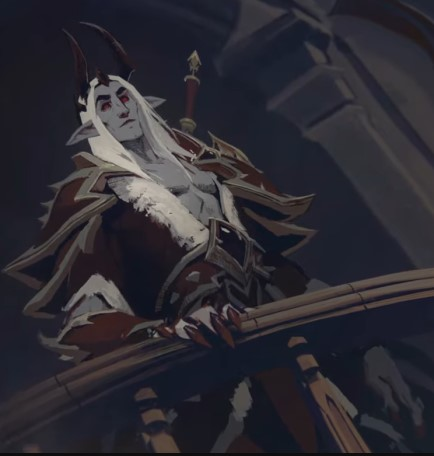

Sire Denathrius

Je prvo lice koje je osnovao Revendreth koje se nalazi u carstvu Shadownlandsa
i u kojima je živeo Venthirov zavet. To je zemlja gotičkih kula i mračnih tajni i nijedna duša
ne želi da završi ovde. Duše koje je ovde poslao arbitar imaju tendenciju da budu
ponosne ili imaju neku drugu manu koja ih sprečava da služe u nekom drugom carstvu
ili odlaze u neko drugo carstvo, a one dolaze ovde da iskupljuju svoje grehe i
nadamo se da će biti iskupljene, pošto je ubačena alternativa u Mav. Dužnost je
vampirijskog ventara da pripremi duše - kroz nezamislive muke. Iako je carstvo
uglavnom obavijeno tamom, postoje delovi Revendretha gde se svetlost probila kroz
oblake i zapekla zemlju. Mnoge duše u Revendrethu ranjive su na svetlost i bile su
okovane u ovim oblastima.
Carstvo nadolazećih bedema i gotičkih sela, Revendreth je dom veterana, žetelaca greha.
Jadne duše koje stignu ovde mogu naći pokoru za svoja nedela ... ili samo udovoljiti apetitima svojih čuvara.
Duše opterećene čudesnim ponosom na život šalju se Revendrethu na kraju. Anima se od
njih muči kako bi nahranila apetit svojih čuvara. Naučena poniznost trebala je biti
sudbina duša poverenih našoj brizi. Bojim se da tim arhaičnim načinima više nije mesto
unutar Revendretha. Ponos: Glavni je razlog što su smrtne duše predane Revendrethu, mi
postojimo da bismo ih oslobodili tog uznemirujućeg greha i bili blagosloveni njihovom animom.
Glavni vidik regije je njegov džinovski zamak, prostrt nad maglovitom šumom. Samo ulazno
odeljenje zamka propada, kao i zgrade i građevine širom terena, jer je region lišen
novih duša i njihove dragocene Anime.
Stari kamen, nadgrobni spomenici sa zločinima
duše nabrojanim na njemu, zasipavaju svaki put. Duše poslane ovde mogu vremenom da
urežu ove grehe sa svojih kamena dok ih ventir priprema za zagrobni život. U šumi
ispunjenoj maglom venerični raspored lovi izmučene duše, šaljući ih sa lažnim osećajem
nade i sigurnosti, a zatim im ulazi u trag i „ponižava“ ih.
Katakombe su duše u kojima
su duše eonima zaključane dok ne budu dovoljno ponizne da opravdaju njihov prelazak u
Domove pomirenja. Tamo sve duše moraju bar jednom proći Ritual Opraštanja da bi se u potpunosti
očistile od greha i Ritual Suda da bi se rešila njihova konačna sudbina. Međutim, neke duše
se čuvaju u zamku Nathria kako bi plemići mogli uživati.
Još jedno značajno područje je Ember
Vard, koje se nalazi na zapadnoj strani regiona. Tamo se svetlost zapravo probila i izuzetno
je štetna za stanovnike Revendretha. Razmrvljeni zidovi i uništeni pejzaž nastali su zbog suše i proždirača anime.